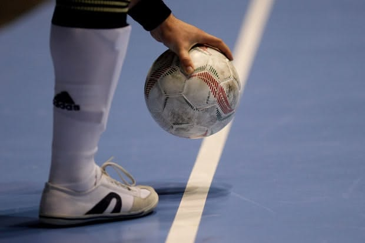
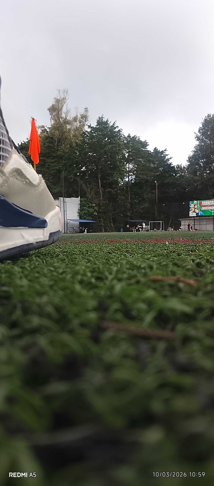
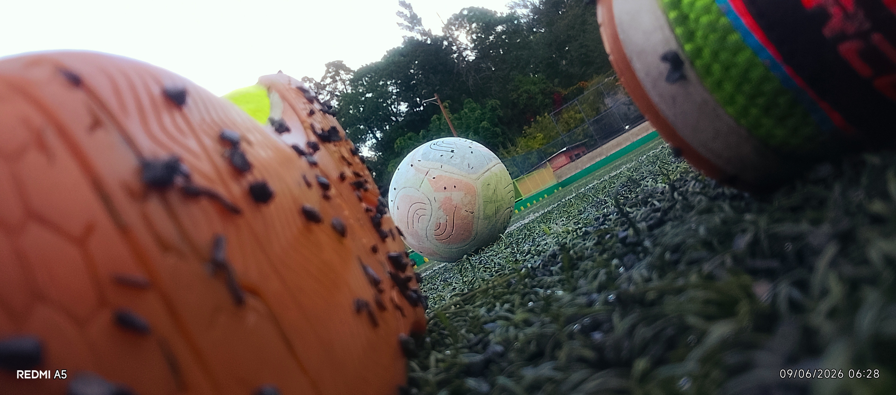

Fútbol sala
Me apasiona el fútbol y es mi espacio favorito de recreación. Destaco por mis habilidades y siempre me enfoco en el juego y en el trabajo en equipo. Es un espacio de juego rápido y coordinación, y aquí siempre soy feliz. Doy lo mejor de mí a pesar de las condiciones y siempre lucho por alcanzar la victoria, pero también estoy dispuesto a aprender de una derrota: sé que no siempre se gana y no siempre se pierde. Aquí es donde obtengo mi resiliencia.